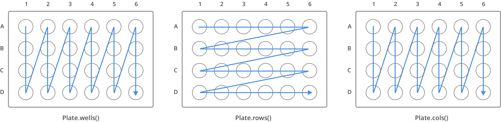

Accessing Wells in Labware¶
All labware used on the robot is broken down into wells. Yes, this applies even if you are using tubes too. Here, you'll learn how to access wells in the API.
Well Ordering¶
When writing a protocol, you will need to select which wells to transfer liquids to and from.
Rows of wells (see image below) on a labware are typically labeled with
capital letters starting with 'A'; for instance, an 8x12 96 well plate
will have rows 'A' through 'H'.
Columns of wells (see image below) on a labware are typically labeled
with numerical indices starting with '1'; for instance, an 8x12 96
well plate will have columns '1' through '12'.
For all well accessing functions, the starting well will always be at the top left corner of the labware. The ending well will be in the bottom right, see the diagram below for further explanation.

Note
Examples in this section expect the following:
metadata = {'apiLevel': '2.6'}
def run(protocol):
plate = protocol.load_labware('corning_24_wellplate_3.4ml_flat', slot='1')
New in version 2.0
Accessor Methods¶
There are many different ways to access wells inside labware. Different methods are useful in different contexts. The table below lists out the methods available to access wells and their differences.
| Method Name | Returns |
|---|---|
wells() |
List of all wells, [labware:A1, labware:B1, labware:C1...] |
rows() |
List of a list ordered by row, [[labware:A1, labware:A2...], [labware:B1, labware:B2..]] |
columns() |
List of a list ordered by column, [[labware:A1, labware:B1..], [labware:A2, labware:B2..]] |
wells_by_name() |
Dictionary with well names as keys, {'A1': labware:A1, 'B1': labware:B1} |
rows_by_name() |
Dictionary with row names as keys, {'A': [labware:A1, labware:A2..], 'B': [labware:B1, labware:B2]} |
columns_by_name() |
Dictionary with column names as keys, {'1': [labware:A1, labware:B1..], '2': [labware:A2, labware:B2..]} |
Accessing Individual Wells¶
Dictionary Access¶
Once a labware is loaded into your protocol, you can easily access the
many wells within it by using dictionary indexing. If a well doesn't
exist in this labware, you will receive a KeyError. This is equivalent
to using the return value of
wells_by_name():
a1 = plate['A1']
d6 = plate.wells_by_name()['D6']
New in version 2.0
List Access From wells¶
Wells can be referenced by their name, as demonstrated above. However, they can also be referenced with zero-indexing, with the first well in a labware being at position 0.
plate.wells()[0] # well A1
plate.wells()[23] # well D6
Tip
You may find well names (for example "B3") to be easier to reason with,
especially with irregular labware (for example
opentrons_10_tuberack_falcon_4x50ml_6x15ml_conical (Labware
Library).
Whichever well access method you use, your protocol will be most
maintainable if you use only one access method consistently.
New in version 2.0
Accessing Groups of Wells¶
When describing a liquid transfer, you can point to groups of wells for both the liquid's source and the destination. Or, you can get a group of wells and loop (or iterate) through them.
You can access a specific row or column of wells by using the
rows_by_name() and
columns_by_name() methods on
a labware. These methods both return a dictionary with the row or column
name as the keys:
row_dict = plate.rows_by_name()['A']
row_list = plate.rows()[0] # equivalent to the line above
column_dict = plate.columns_by_name()['1']
column_list = plate.columns()[0] # equivalent to the line above
print('Column "1" has', len(column_dict), 'wells')
print('Row "A" has', len(row_dict), 'wells')
will print out...
Column "1" has 4 wells
Row "A" has 6 wells
Since these methods return either lists or dictionaries, you can iterate through them as you would regular Python data structures.
For example, to access the individual wells of row 'A' in a well
plate, you can do:
for well in plate.rows()[0]:
print(well)
or,
for well_obj in plate.rows_by_name()['A'].values():
print(well_obj)
and it will return the individual well objects in row A.
New in version 2.0